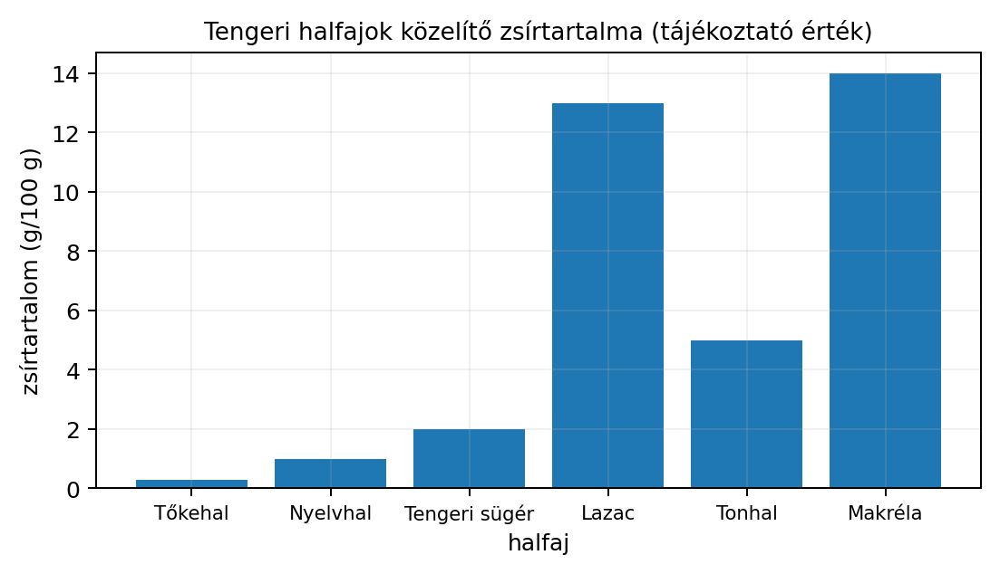

Képzeld el, hogy a mai étlapon citromos lazacfilé bőrös oldalán sütve szerepel. A vendég „átsütés” nélkül kéri, de a konyhában nincs maghőmérő, csak a serpenyő hőfokára hagyatkoztok. A lazac kívül megég, belül még nyers. A vendég visszaküldi, az el nem adott étel anyagköltsége pedig kidobott pénz. A tengeri és vándorhalak sokkal drágábbak, mint a legtöbb édesvízi hal, ezért a pontos előkészítés, a megfelelő hőkezelés és a frissesség ellenőrzése a szakács mindennapi feladata. Ebben az alfejezetben a tengeri fehér húsú halaktól a barna húsú tonhalig és makréláig, valamint a lazacig és a tokfélékig tanulod meg a biztonságos, gazdaságos konyhai eljárásokat.
A tengeri halakat a konyhai gyakorlatban elsősorban a húsuk zsírtartalma és színe szerint csoportosítjuk. A besorolás meghatározza, milyen hőkezelő eljárást érdemes választani: a sovány, fehér húsú halak könnyen kiszáradnak, ezért pároljuk, kevés folyadékban sütjük vagy vajban pirítjuk. A zsírosabb, barna húsú tengeri halak kibírják a magasabb hőfokot és a grillezést is. A vándorhalak világos, de közepesen zsíros húsúak, és a lazacot, a tokot éppen ezért gyakran rózsaszínre sütve, de belül szaftosan tálalják.

| Csoport | Példák | Hús jellemzője | Gyakori konyhai eljárás |
|---|---|---|---|
| Tengeri fehér húsú halak | Tőkehal, nyelvhal, tengeri sügér | Sovány, lágy, könnyen szétesik | Párolás, kevés folyadékos sütés, vajban pirítás, rántás |
| Tengeri barna húsú halak | Tonhal, makréla, szardella | Közepesen zsíros vagy zsíros, erősebb íz | Grillezés, roston sütés, nyers vagy átsütött steak, füstölés |
| Vándorhalak | Lazac, tokfélék | Közepesen zsíros, finom rostú | Bőrön sütés, párolás, egészben sütés, átsütési fokok |
Definíció. A tengeri fehér húsú halak alacsony zsírtartalmú, világos húsú tengeri halak. A tengeri barna húsú halak nagyobb zsírtartalmú, sötétebb húsú, gyakran vándorló tengeri fajok. A vándorhalak életciklusuk során a tenger és az édesvíz között vándorolnak; a konyhán nevüket a közepesen zsíros, karakteres húsuk miatt használjuk.
Megjegyzés. A „fehér” és „barna” hús megnevezés nem élelmiszer-minőségi osztály, hanem konyhai csoportosítás. A lazac húsa rózsaszín, a tonhalé vörösesbarna, de a technológiai besorolás alapja a zsírtartalom és a rostszerkezet.
A pultnál és az áruátvételen a halat a fajra jellemző külső jegyekről kell felismerni. A rajztábla a táblázat három csoportjának hat halát mutatja; a tonhalnál és a lazacnál a konyhán leggyakrabban látott szeletet is.
A döntő jegyek: a tőkehal három hátúszója és állbajusza, a nyelvhal lapos teste (mindkét szeme az egyik oldalon), a tonhal és a makréla farok előtti apró úszócskái, a lazac kis zsírúszója és a tokféle csontpajzs-sorai. A rajzok sematikusak; a végleges felismeréshez a valódi hal vagy jó minőségű fénykép a mérvadó. A HTML-kiadásban a halra mutatva kiemelődik a neve és a jegyei.
A tengeri halak nagyon gyorsan romlanak. A sérült hűtőlánc, a melegben tartott hal nemcsak kellemetlen szagot ad, hanem hisztamin is képződhet benne, főként a makréla, a tonhal és a szardella esetében. A hisztamin nem bomlik el főzéssel, ezért a megelőzés a kulcs: a halat hűtve kell szállítani, tárolni és előkészíteni.
Higiénia. A friss tengeri hal ismérvei: telt, átlátszó, kidülledő szem; élénk piros vagy rózsás, nedves kopoltyú; fényes, feszes, nyálkás bőr; a hús rugalmas, ujjbenyomásra visszaugrik; a hasüreg szaga friss, enyhén sós-tengeri. Ha a hal szaga erősen „halszagú”, ammóniás vagy savanyú, a hús pépes, kásás, a halat tilos felhasználni. A fagyasztott tengeri halat hűtőszekrényben, legfeljebb 0–4 °C-on, lassan olvaszd (ellenőrizendő: NÉBIH-útmutató). Az olvadó jéglét ne folyasd a többi élelmiszerre.
Kritikus pont. A friss tengeri halat 0–2 °C-on (olvadó jégen) tárold, jégágyon vagy zárt edényben, a nyers húsoktól elkülönítve. Az előkészítés és a hőkezelés közt minél kevesebb idő teljen el. A hal belső maghőmérsékletét hőmérővel ellenőrizd: a hal maghőmérséklete a biztonságos alapváltozatban – főtt, párolt, rántott, darált vagy töltött halnál – legalább 75 °C; a vendég kifejezett kérésére kevésbé átsütött filénél/steaknél legalább 63 °C, tájékoztatással, sérülékeny csoportnak nem (tanulási érték; ellenőrizendő: NÉBIH-útmutató / HACCP-terv). A melegen tartás legalább 63 °C, a visszahűtés a HACCP-tervben rögzített időn belül történjen.
Allergén. A tengeri és vándorhalak mindegyike allergén: halak. A felhasznált fűszerek, mártások, köretek további allergéneket tartalmazhatnak, például tej, glutén, zeller, mustár, kén-dioxid és szulfitok a borban. A vendéget pontos, írásban rögzített tájékoztatás illeti meg; az elkülönített eszközhasználatot és a keresztszennyeződés megelőzését mindig dokumentáld.
A tőkehal (franciául cabillaud, angolul cod) sovány, fehér, viszonylag nagy pelyhekben széteső húsú hal. Konyhai szempontból kiváló párolva, rántva, vagy enyhén sós, portugál módra áztatott változatban. A tőkehalfilé könnyen kiszárad, ezért hőkezeléskor ne hagyd magára.
A nyelvhal (franciául sole, angolul sole) lapos testű, nemes fehér húsú tengeri hal. Finom, kevésbé rostos húsa miatt gyors, kíméletes eljárást kíván: vajban pirítva, kevés fehérborban párolva vagy egészben sütve. A filézett nyelvhal a francia konyha klasszikus alapanyaga.
A tengeri sügér (franciául bar vagy loup de mer, angolul sea bass) megnyúlt testű, pikkelyes, fehér húsú, közepesen sovány hal. Egészben, sókéregben, roston vagy párolva is gyakori. Bőre sütés közben ropogósra pirítható; a hús finom, enyhén édeskés.
Tengeri fehér húsú hal filézése. A tengeri halakat leggyakrabban filé formájában vásároljuk. Ha egész hal érkezik, a pikkelyezés után a hal hasüregét felvágjuk, a zsigereket eltávolítjuk, a hasüreget alaposan kiöblítjük. A filézés során a gerinc mentén, a faroktól a fej felé haladva leválasztjuk a húst, majd a bordacsontokat kicsontozó csipesszel eltávolítjuk. A tengeri fehér húsú halak filéi vékonyak, ezért a hőkezelés rövid.
Szabály. A fehér húsú tengeri halat soha ne süsd túl magas hőfokon, és ne párold túl sokáig: a hús kiszárad, szétesik. A legbiztonságosabb a kíméletes párában vagy fóliában párolás, a vajban pirítás és a rövid idejű, közepes hőmérsékletű sütés.
A tonhal (franciául thon, angolul tuna) nagy testű, vörösesbarna húsú, közepesen zsíros tengeri hal. Húsa sűrű, szinte hússzerű, ezért steakszerűen is készíthető. A tonhalat gyakran átsütési fokokra sütik: a belseje lehet még rózsaszín vagy vörös (medium-rare), de ez csak akkor megengedett, ha a hal friss, hivatalos forrásból származik, és a vendéget tájékoztatták a nyers vagy kevéssé átsütött hal kockázatáról. A sérülékeny csoportoknak (várandós, kisgyermek, idős, legyengült immunrendszerű) mindig teljesen átsütött halat ajánlj.
A makréla (franciául maquereau, angolul mackerel) kisebb, torpedó alakú, nagyon zsíros tengeri hal. Húsa sötétebb, erős ízű. Konyhatechnikailag jól bírja a grillezést és a füstölést, de a magas zsírtartalom miatt gyorsan avasodik; mindig frissen kell felhasználni. A makréla a hisztamin képződésére különösen hajlamos, ezért a hűtési lánc megszakítását tilos megengedni.
Higiénia. A tonhal és a makréla elkészítésekor a nyers halat csak elkülönített deszkán, késsel és edénnyel kezeld. A nyers halból származó lé ne érintkezzen kész ételekkel, salátákkal, köretekkel. A használt eszközöket azonnal mosd el forró, mosogatószeres vízben. A hal hűtőben, 0–4 °C-on legfeljebb a HACCP-tervben rögzített ideig tárolható (ellenőrizendő: üzemi HACCP).
A lazac (franciául saumon, angolul salmon) a legismertebb vándorhal. Húsa narancsrózsaszín, közepesen zsíros, finom rostú. A lazacfilét leggyakrabban bőrös oldalán sütjük, így a bőr ropogós lesz, a hús pedig szaftos marad. A lazacot soha ne főzd szét, mert a rostok kiszáradnak, és a szín szürkésre vált.
A tokfélék (franciául esturgeon, angolul sturgeon) primitív, porcos vázú halak. Több fajuk vándorló, illetve édesvízi; a konyhán felhasznált tokfélék (pl. lénai tok, kecsege) általában tenyésztett halak, és nyomon követhető, igazolt eredetből szerezhetők be. A vadon élő tokfélék fogását és kereskedelmét halászati és természetvédelmi szabályok, a kaviár kereskedelmét a CITES-egyezmény szabályozza (ellenőrizendő: a kecsege és a viza hazai státusza, hatályos halászati és természetvédelmi jogszabály). A tok húsa fehér, szálkamentes, pecsenyének, párolva vagy füstölve kiváló. A tok ikrájából készül a fekete kaviár, amelynek kereskedelme szigorú engedélyhez és fenntarthatósági igazoláshoz kötött.
A lazacot a konyhai gyakorlatban átsütési fokokra sütik. Ez azt jelenti, hogy a hal külseje átsült, de a közepe még szaftos, rózsaszín, nem száradt ki. A kívánt fok eléréséhez nem elég az időt figyelni: mindig maghőmérőt használj, és a vastagabb részbe szúrd.
| Átsütési fok | Maghőmérséklet (tájékoztató) | Jellemző |
|---|---|---|
| Átsütve (well done) | 63–68 °C (vendégkérésre kevésbé átsütött filénél; az alapváltozat legalább 75 °C) | A hús teljesen opálos, pelyhesen válik, de nem száraz |
| Közepesen sütve (medium) | 55–60 °C | A közepe rózsaszín, szaftos, rugalmas |
| Félig sütve / rózsaszínre (medium-rare) | 50–55 °C | A mag még áttetsző rózsaszín, puha |
Figyelem. A fenti hőmérsékletek tájékoztató tanulási értékek (ellenőrizendő: NÉBIH-útmutató / HACCP-terv). A nyers vagy kevéssé átsütött halat csak olyan alapanyagból adj, amelyet a parazitamentesítéshez előírt módon fagyasztottak (tanulási érték: −20 °C, legalább 24 óra; ellenőrizendő: 853/2004/EK és NÉBIH-útmutató), hivatalos forrásból származik, és a vendég tájékoztatást kapott a kockázatról. A sérülékeny csoportoknak mindig teljesen átsütött halat kínálj.
Eljárás: lazacfilé bőrös oldalán sütve
Gyakorlati tanács. Ha a bőr leragad, a serpenyő nem volt elég forró, vagy túl korán mozgattad a halat. Ha a hús kifehéredik és a fehérje kicsapódik a felületén, a hőfok túl magas volt.
A képsor az eljárás lépéseit követi: az 1. kép az 1. lépés, a 2. a 3–4., a 3. az 5., a 4. a 6., az 5. a 7. lépés. A 3. képen figyeld meg, hogy az átsült, opálos sáv a filé oldalán alulról felfelé halad: ebből látod, mikor kell fordítani. A kész fokot azonban nem a színből, hanem a legvastagabb részbe szúrt maghőmérővel ellenőrzöd. A HTML-kiadásban a lépéseket egyenként lapozhatod.
A tengeri halakhoz olyan mártások illenek, amelyek kiemelik a hal ízét, de nem nyomják el. A leggyakoribb halmártások:
A köretek közül a tengeri halakhoz párolt zöldségek, vajas burgonyapüré, párolt rizs, friss saláták, főtt újburgonya, grillezett zöldspárga illenek. A zsírosabb halakhoz (makréla, lazac) savas kiegészítőt is adj: citromgerezdet, balzsamecet-öntetet, kapribogyót.
A tengeri halak drágák, ezért a beszerzést pontosan kell számolni. A sütési veszteség a lazacnál jellemzően 15–20% a hőkezelés során eltávozó víz miatt. A filékihozatal az egész halból nyert filé aránya (tőkehalnál kb. 40–50%, lazacnál kb. 55–65%); a filézési veszteség ennek kiegészítője (lazacnál kb. 35–45%; ellenőrizendő: üzemi anyaghányad-gyűjtemény).
Számítás. 20 adag lazacot készítünk bőrös filéből. Egy adag kész lazac adagsúlya 130 g. A sütési veszteség 20%. Mennyi nyers lazacfilét kell beszerezni?
Adott: adagszám adag, kész adagsúly , sütési veszteség .
Keresett: nyers filé tömeg (g vagy kg).
Képlet: a kész tömeg a nyers tömegből a veszteség levonása után marad:
Behelyettesítés: a 20 adaghoz szükséges kész hal összesen .
Ellenőrzés: , ami 20 adag 130 g-os kész hal, tehát a számítás helyes. Ha egész lazacból indulunk, és a filézési veszteség 40% (a kihozatal 60%), akkor a szükséges egész lazac tömege lenne.
Megjegyzés. A százalékos veszteséget mindig a megfelelő alappal számold: a sütési veszteséget a nyers filé tömegére, a filézési veszteséget az egész hal tömegére vonatkoztatjuk.
Az ábra a fenti példát mutatja két lépcsőben: a kész halból (2600 g) a sütési veszteséggel a nyers filéhez (3250 g), onnan a kihozatallal az egész halhoz (kb. 5417 g) jutunk. A tipikus hiba, ha a két százalékot összeadod (20 % + 40 % = 60 %) és a kész tömegre vetíted: így 6500 g jön ki, ami túlrendelés. A HTML-kiadás kalkulátorában az adagszámot, a kész adagsúlyt, a sütési veszteséget és a kihozatalt csúszkával változtathatod; a 3. feladat adataival (30 adag, 140 g, 18 %, 60 %) ellenőrizheted a megoldásodat.
Adagszám: 10 adag. Adagsúly: 128 g kész lazac + 100 g burgonyapüré + 30 ml mártás adagonként.
| Nyersanyag | Mennyiség 10 adagra | Megjegyzés |
|---|---|---|
| Lazacfilé bőrrel | 1600 g (10 × 160 g) | Friss vagy felolvasztott, allergén: hal |
| Só | 12 g | |
| Őrölt fehér bors | 2 g | |
| Napraforgóolaj | 30 ml | Magas füstpontú |
| Vaj | 80 g | a mártás befejezéséhez (monter au beurre), allergén: tej |
| Citrom | 2 db (kb. 200 g) | Lé és gerezd a tálaláshoz |
| Friss kapor | 20 g | Aprítva |
| Száraz fehérbor | 200 ml | A mártáshoz, allergén: kén-dioxid és szulfitok |
| Vöröshagyma | 50 g | A mártáshoz |
| Tejszín (30%) | 150 ml | A mártáshoz, allergén: tej |
| Burgonya | 900 g | A püréhez, tisztítva |
| Vaj | 60 g | A püréhez, allergén: tej |
| Tej | 90 ml | A püréhez, allergén: tej |
| Szerecsendió | csipetnyi (kb. 0,5 g) |
Allergének: hal, tej, kén-dioxid és szulfitok (fehérbor). A mártás tejszínt és vajat tartalmaz; a vajas burgonyapüré tejet és vajat.
Eszközök és gépek: kés és vágódeszka, serpenyő, kis lábas, habverő, spatula, maghőmérő, burgonyanyomó, mérleg, edények.
Higiéniai előkészület: kézmosás, tiszta kötény, hajháló; a nyers halhoz külön deszka és kés; a halat csak közvetlenül a sütés előtt vedd ki a hűtőből.
Előkészítés lépései: 1. A lazacfiléket szárazra töröld, a bőrt irdald be sekélyen. 2. A húsoldalt sózd, borsozd; a bőrt közvetlenül sütés előtt sózd. 3. A burgonyát hámozd, kockázd, sós vízben főzd puhára. 4. A mártáshoz a vöröshagymát finomra vágd, a kaprot aprítsd, a citromokat mosd meg és facsard ki.
Elkészítés lépései: 1. A burgonyát szűrd le, párold el, törd át burgonyanyomón, add hozzá a forró tejet és a vajat, keverd simára, szerecsendióval ízesítsd. Tartsd melegen. 2. A mártáshoz a fehérbort a vöröshagymával kis lángon, fedő nélkül redukáld a felére. 3. Add hozzá a tejszínt, forrald össze, majd keverd bele a hideg vajat kockánként, folyamatos keverés mellett. 4. Ízesítsd citromlével, sóval, kaporral. A mártást vízfürdőben, kb. 60–65 °C-on, legfeljebb a tálalás idejére tartsd (rövid ideig; ellenőrizendő: HACCP-terv); ne forrald, a maradékot ne tárold. 5. A serpenyőt melegítsd fel közepes-magas hőfokra, öntsd rá az olajat. 6. Helyezd a lazacfiléket bőrös oldalukkal lefelé, süsd 3–4 percig, amíg a bőr ropogós. 7. Fordítsd meg, süsd tovább 2–3 percig, amíg a maghőmérséklet a vastag részben eléri a 63 °C-ot (ez a vendég kérésére bőrön sült filé értéke; az alapváltozat legalább 75 °C; ellenőrizendő: HACCP-terv). 8. Pihentesd 2–3 percig, majd tálald a bőrös oldallal felfelé.
Kritikus pontok. A nyers lazacot 0–2 °C-on tárold, ne hagyd szobahőmérsékleten. A halat csak közvetlenül sütés előtt vedd ki a hűtőből. A kész hal maghőmérséklete az alapváltozatban legalább 75 °C legyen; ha a vendég kevésbé átsütve kéri, legalább 63 °C, csak a tájékoztatás után, sérülékeny csoportnak nem. A melegen tartás legalább 63 °C (ellenőrizendő). A fel nem használt nyers halat azonnal tedd vissza a hűtőbe. A használt eszközöket forró mosogatószeres vízben mosd el.
Készentartás és tálalás. A lazacot azonnal tálald, mert hűlve szétesik. A tányérra helyezz 100 g burgonyapürét, tedd rá a lazacfilét bőrös felével felfelé, öntsd köré a mártást, díszítsd citromgerezddel és kaporral.
Minőségi követelmények. A bőr aranybarna, ropogós; a hús belseje szaftos, a külső réteg átsült; a mártás sima, krémes, nem csomós; a burgonyapüré lágy, levegős, nem ragacsos.
Tipikus hibák és javításuk: - A bőr nem ropogós, leragad. Oka: hideg serpenyő, kevés olaj, túl korai mozgatás. Javítás: forróbb serpenyő, több olaj, türelem. - A hal száraz, szétesik. Oka: túl hosszú sütés, túl magas hőfok. Javítás: maghőmérő, rövidebb idő, pihentetés. - A mártás kicsapódik, vajasan szétválik. Oka: túl forró mártás, gyors vajbeadagolás. Javítás: keverés mellett, kis kockánként, a mártást 60–65 °C körül tartva.
Változatok: a lazacfilét párolhatod is zöldségágyon, kétfogásos tálalásban. A mártást kapor helyett tárkonnyal vagy dijoni mustárral is ízesítheted.
Cél: készíts 10 adag tőkehalfilét úgy, hogy a hal szaftos marad, a mártás sima, a zöldség roppanós. Gyakorold a fehér húsú tengeri hal párolását és a besűrített fehérboros mártást.
Eszközök és anyagok: lábas fedővel, párolóbetét vagy sütőpapír, habverő, kés, vágódeszka, mérleg, maghőmérő. Nyersanyagok 10 adagra: tőkehalfilé 1800 g, só 10 g, fehér bors 2 g, száraz fehérbor 200 ml, víz vagy halleves 300 ml, vaj 80 g, finomliszt 40 g (allergén: glutén), vöröshagyma 80 g, zöldségkeverék (répa, cukkini, zeller) 800 g, citrom 1 db. Allergének: hal, glutén (liszt), tej (vaj), zeller (zöldségkeverék), kén-dioxid és szulfitok (bor); a halleves összetétele szerint további allergének.
Biztonsági korlát. Ezt a műveletet tankonyhán vagy oktatói felügyelettel gyakorold; otthon csak a leírt biztonsági feltételekkel. A forró gőz, a forró folyadék és a kés használatakor a munkavédelmi szabályokat be kell tartani.
Higiéniai előkészület: kézmosás, tiszta eszközök, a nyers halat külön deszkán kezeld. A fagyasztott tőkehalat hűtőben olvaszd.
Számozott lépések: 1. A halat kívül-belül töröld szárazra, sózd, borsozd. 2. A zöldségeket mosd meg, hámozd, vágd egyenletes kockákra vagy csíkokra. 3. A vöröshagymát finomra vágd, kevés vajon párold üvegesre. 4. Szórd meg liszttel, keverd el, öntsd fel fehérborral és halleves/alappal, folyamatos keverés mellett forrald be. 5. Ízesítsd sóval, citromlével; a mártást szűrd át, tartsd melegen (kb. 60–65 °C, a tálalás idejéig; ellenőrizendő: HACCP-terv), ne forrald. 6. A zöldségeket kevés vajon, kevés folyadékkal párold éppen roppanósra. 7. A tőkehalfiléket helyezd pároló edénybe, öntsd alá a mártás felét, fedd le, és alacsony hőfokon 6–8 percig párold, amíg a hal maghőmérséklete legalább 75 °C (ellenőrizendő: HACCP-terv). 8. A halat óvatosan emeld ki, tartsd melegen, a visszamaradt mártást sűrítsd be hideg vajjal. 9. Tálald a halat mártással és párolt zöldséggel.
Ellenőrzési pontok: a mártás selymes, nem csomós; a hal pelyhesen szétválik, de nem esik szét; a zöldségnek ellenállása van; a maghőmérséklet legalább 75 °C.
Dokumentálás: rögzítsd a hűtő hőmérsékletét, a hal beérkezési és felhasználási idejét, a sütési/párolási maghőmérsékletet és a kész étel tálalási idejét a HACCP-lapon (ellenőrizendő: üzemi forma).
A tengeri és vándorhalak kész ételeinél a következőket ellenőrizd:
Egy tengerparti étterem séfje friss tonhalsteaket vásárolt, de a hűtőkocsi késve érkezett, és a tonhal órákig állt a rakodónál. A séf megszagolta, nem érzett erős szagot, ezért átsütött fokon megsütötte a halat. A vendég az étkezés után fejfájásra, arckipirulásra panaszkodott, és kiderült, hogy a tünetet hisztamin okozta. A hisztamin a nem megfelelően hűtött tonhalban képződött, és a sütés nem pusztította el. Az étterem megtanulta: a tonhalat, makrélát átvételkor azonnal hőmérőzni kell, a hűtési láncot dokumentálni, és gyanús halat tilos felszolgálni. (Az eset tanulási példa; konkrét étterem, bírság és határérték nélkül.)
1. feladat (A) Csoportosítsd a következő halakat: tőkehal, lazac, makréla, tonhal, nyelvhal, tengeri sügér, kecsege. Jelöld, melyik fehér húsú tengeri, barna húsú tengeri vagy vándorhal.
2. feladat (A) Sorold fel a friss tengeri hal három érzékszervi jelét, amelyek alapján átvételkor ellenőrizhető.
3. feladat (B) Számítsd ki: hány kilogramm egész lazacot kell rendelni 30 adag lazacfiléhez, ha egy adag kész filé 140 g, a sütési veszteség 18%, a filézési veszteség 40%? A filézési veszteséget az egész lazacra, a sütési veszteséget a nyers filére számold.
4. feladat (B) Állítsd helyes sorrendbe a lazac bőrös oldalán sütés lépéseit: (a) a bőr irdalása, (b) a húsoldal sózása, (c) a serpenyő felmelegítése olajjal, (d) a lazac bőrös felével lefelé sütése 3–4 percig, (e) a hal megfordítása, (f) a maghőmérséklet ellenőrzése.
5. feladat (C) Tervezz egy egyszerű kétfogásos menüt tengeri fehér húsú halból és barna húsú halból. Add meg az ételeket, a főzési eljárást és az allergénlistát.
6. feladat (D) Hibaelemzés: a tonhalsteak kívül megégett, belül hideg és nyers. Mi lehet a három lehetséges oka? Hogyan előznéd meg? Írd le a javítást is.
Önellenőrzés – válaszok: lásd fent.
1. feladat (A) - Tengeri fehér húsú: tőkehal, nyelvhal, tengeri sügér. - Tengeri barna húsú: makréla, tonhal. - Vándorhal: lazac. - A kecsege tokféle, a táblázat szerint a vándorhalak (tokfélék) csoportja; a konyhára tenyésztett, nyomon követhető tétel kerül; a vadon fogott kecsege fogását halászati szabályok korlátozzák (ellenőrizendő: hatályos halászati és természetvédelmi jogszabály).
2. feladat (A) Három érzékszervi jel a friss tengeri halnál: telt, kidülledő szem; fényes, feszes bőr; rugalmas hús, amely ujjbenyomásra visszaugrik. Ezen kívül a friss, enyhén sós-tengeri szag.
3. feladat (B) Adatok: adag, kész adag , sütési veszteség , filézési veszteség .
Először a szükséges nyers filé tömegét számítjuk:
Az egész lazac szükséglet, ha a filézési veszteség 40%:
Ellenőrzés: kész hal, ami 30 adag × 140 g.
4. feladat (B) Helyes sorrend: a, b, c, d, e, f. (A bőr irdalása először, hogy ne pöndörödjön; a sózás a húsoldalon; a serpenyő előmelegítése; bőrös oldal sütése; megfordítás; maghőmérséklet ellenőrzés.)
5. feladat (C) Például: - Előétel: párolt tőkehalfilé fehérboros mártással, párolt cukkinivel. Allergének: hal, glutén (ha lisztes rántás), tej (vaj), kén-dioxid és szulfitok (bor). - Főétel: grillezett makrélafilé citromos-csípős öntettel, friss salátával. Allergének: hal, mustár (ha az öntetben), szulfitok (ha ecetes alapú). A menüben a nyersanyagok beszerzésekor a hűtési láncot dokumentálni kell, a halakat elkülönítve kell kezelni.
6. feladat (D) Hibaelemzés: - Tünet: a tonhalsteak kívül megégett, belül hideg és nyers. - Okok: (1) a serpenyő túl forró, a hússzelet túl vastag; (2) a steak vastag és nagyon hideg volt, a felület megégett, mielőtt a hő a közepéig ért; (3) a hús sütés közben nem volt egyenletesen érintkezve a hővel, nem forgatták időben. - Megelőzés: a tonhalat közvetlenül sütés előtt vegyük ki a hűtőből (a hisztaminképződés miatt a hűtési láncot nem szakítjuk meg, a hisztaminkockázat miatt nem temperáljuk), a vastag steaket vágjuk vékonyabbra, 2–3 cm-esre, a serpenyőt közepes-magas hőfokra melegítsük, és maghőmérővel ellenőrizzük. A sütés ideje a szelet vastagságához igazodjon; a tonhal belseje maradhat rózsaszín, de a külső réteg legyen kérges.
A tengeri halakat fehér húsú, barna húsú és vándorhal csoportba soroljuk. A fehér húsú tőkehal, nyelvhal és tengeri sügér sovány, ezért párolással, kevés folyadékos sütéssel készítjük. A barna húsú tonhal és makréla zsírosabb, grillezhető; a tonhalnál az átsütési fokok a konyhai gyakorlat részei. A lazac és a tokfélék vándorhalak: a lazacot bőrös oldalán, maghőmérővel, a biztonságos alapváltozatban legalább 75 °C maghőmérsékletig sütjük (ellenőrizendő); a kevésbé átsütött változat csak a feltételekkel (megfelelően fagyasztott alapanyag, tájékoztatás) adható. A tengeri halaknál kiemelt élelmiszer-biztonsági kockázat a hisztamin képződése (makréla, tonhal) és a gyors romlás, ezért a hűtőláncot 0–4 °C-on fenn kell tartani, és a halat elkülönítve, azonnal elő kell készíteni. A maghőmérséklet a biztonságos alapváltozatban legalább 75 °C; vendég kérésére kevésbé átsütött filénél legalább 63 °C (ellenőrizendő: NÉBIH-útmutató / HACCP-terv). A halmártások (fehérboros vajmártás, kapros tejfölös, hollandi) allergénjeit (hal, tej, tojás, glutén, kén-dioxid és szulfitok) a vendég tájékoztatásakor fel kell tüntetni. Továbbvitt eredmény. A tengeri halak technológiai lapjai, különösen a lazac bőrös sütése és a tőkehal párolása, a Hidegvérű állatokból készülő ételek alfejezetben a frissességi, hűtési és maghőmérsékleti szabályokat a rákfélék, kagylók és fejlábúak sajátosságaival egészítjük ki.